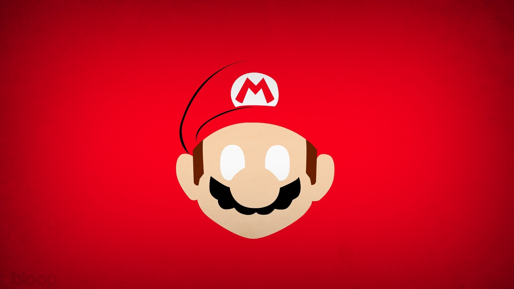
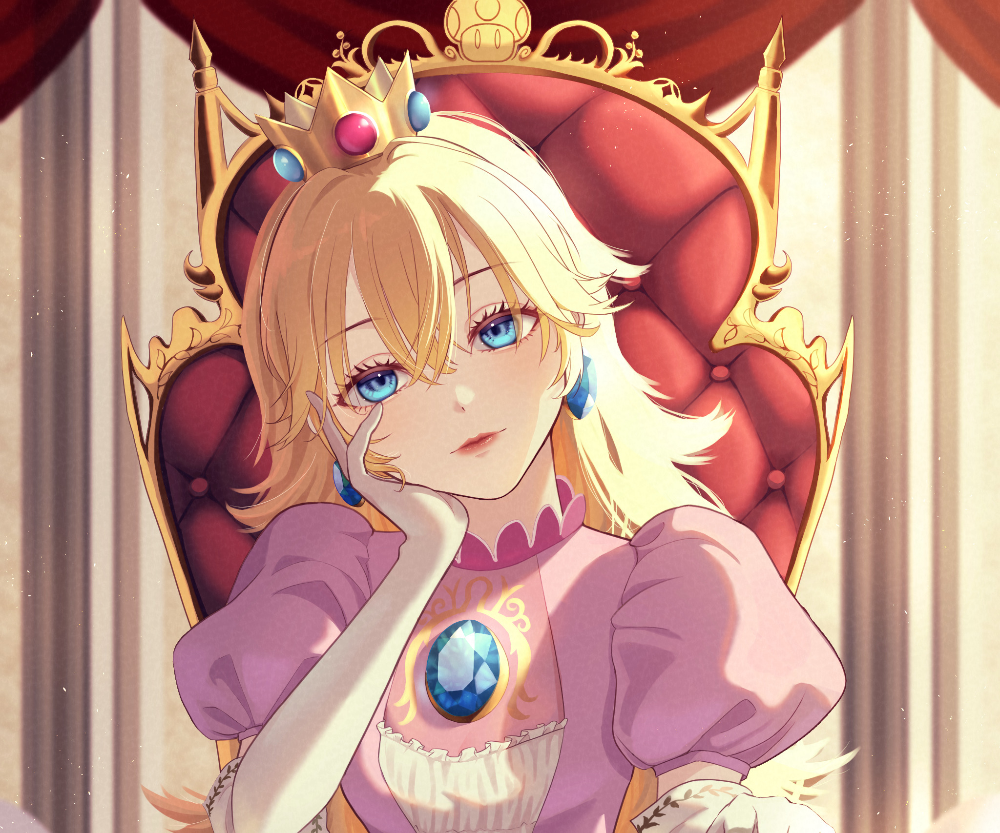
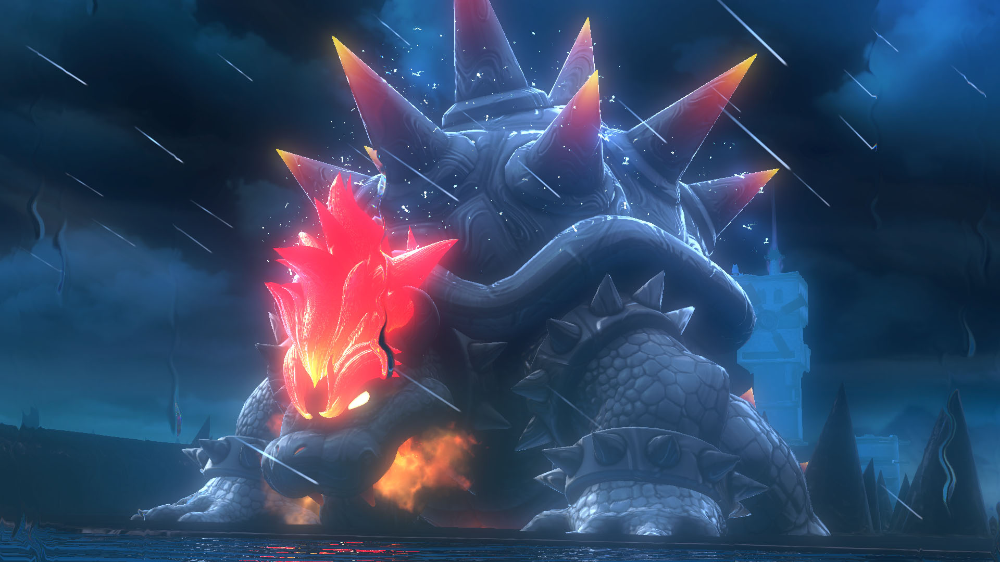
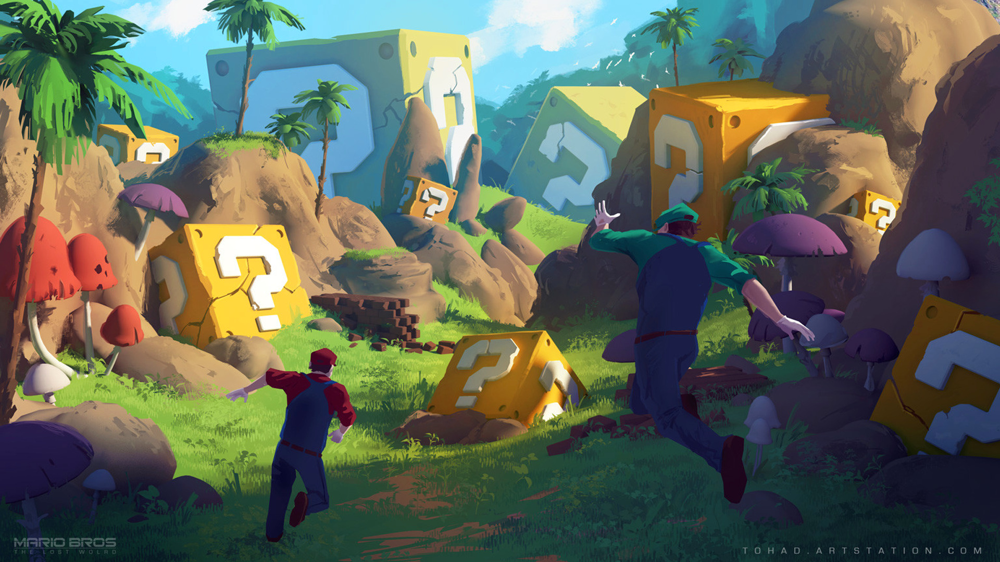
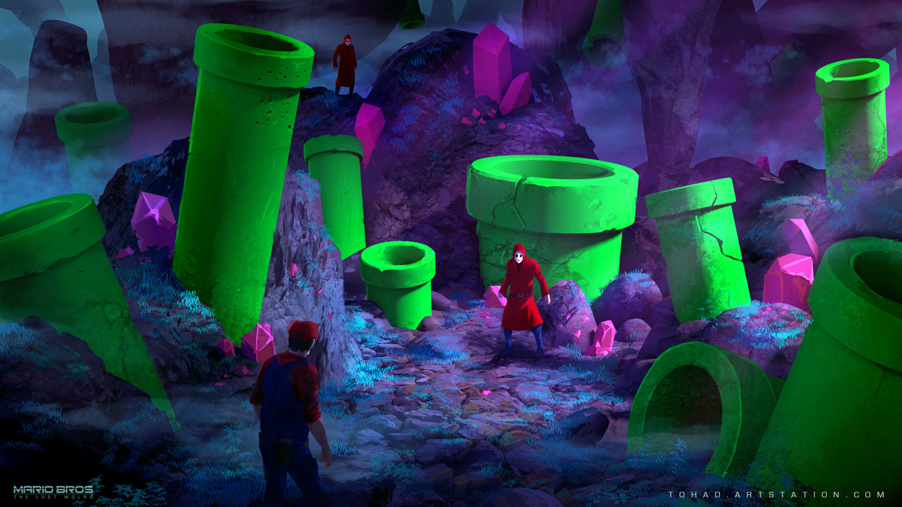
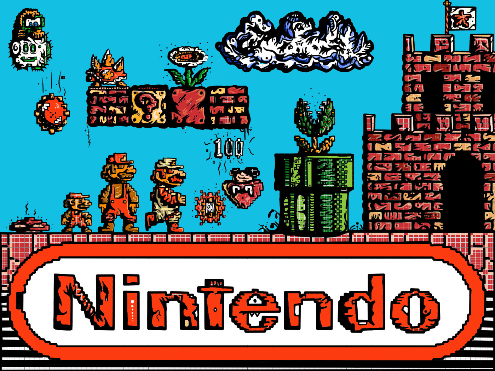

Ícone da Nintendo, Mario marcou a história dos games em sua famosa série. Em 1980, após uma tentativa sem sucesso da Nintendo ao fazer um jogo baseado no desenho Popeye, Miyamoto, considerado o pai do Mario, foi então solicitado pela empresa para projetar um novo jogo baseado em suas próprias ideias.